hugo-模板和内容对应关系
文章目录
对于刚接触hugo的人，阅读本文将了解hugo组织内容的方式，掌握CONTENT、URL、TEMPALTE三者的关系，从结构上理解hugo。本文只介绍内容模板，baseof模板规律也大同小异。
从URL到一篇文章

当访问一个静态网页，会通过URL定位到所需页面，如上图。hugo生成的页面由两部分组成，一部分是页面的框架，另一部分是页面的内容，分别对应模板和文章。所以我们使用hugo搭建Blog时，需要设计两层对应关系：
- 内容和URL的对应关系
- 内容和模板的对应关系
内容可以是我们所写的一篇文章，即一个md文件，也可以是一个文章列表，列出某个类别下所有文章。hugo为我们自动生成两种列表页面，一个是分类页面(category page)，另一个是标签页面(taxonomy page)。我们无需人工指定这两个页面的内容，只需在文章的扉页(front matter)给定categories和tags属性，hugo自动为我们分类并创建列表页面。
还有一种列表页面需要我们定义，即section页面。section为我们提供了一种组织文章的方式，通过构建content的目录结构，我们可以任意分类文章。打个恰当的比方，文章和section的关系类似文件和文件夹的关系。
下面先简单介绍下section。
section
定义section
section的元数据由其下的_index.md定义，内容由其下文章构成。
content/下一级目录为section- 其他目录中包含_index.md即为section
|
|
文章扉页模板和页面模板的位置也和section有关，如archetypes/{{section}}/default.md和layouts/{{section}}/single.html。
section使用的例子
创建content/posts/_index.md，内容如下
|
|
在模板中展示section内容：layouts/_default/list.html
|
|
内容和URL的对应关系
content的目录结构决定了内容和URL的对应关系，其中section起着重要作用。
section在content目录下是一个文件夹，在页面中为一个列表页面。
不同页面类型和内容类型对应的URL如下表所示：
| 页面类型 | 内容类型 | 说明 | URL |
|---|---|---|---|
| single | regular | 常规内容页面 | /{{section}}/{{title}}/ |
| home | 主页 | / |
|
| list | section | section页面 | /{{section}}/ |
| taxonomy | 分类页面 | /tags/ |
|
| term | 特定类别页面 | /tags/{{term}}/ |
|
| category | 分类页面 | /categories/ |
内容和模板的对应关系
hugo会根据页面的类型寻找对应的模板
模板位于layouts目录下，如果使用主题，则在themes/{{theme}}/layouts/下。其目录结构和页面的内容类型相对应，每个类型一个文件夹，如下图。其中_default/是默认模板的存放位置，如果没有对应内容类型的模板，则在此下寻找模板。
这里特别说明的是页面的type属性，{{type}}/文件夹下的模板是根据文章的type属性进行匹配，type由文章扉页来定义，默认值为文章所在目录的名称，所以缺损值和{{section}}一致。

hugo选择渲染模板的主要依据：内容类型
比较特殊的是主页，其模板就位于layouts根目录下，一般为layouts/index.md。
hugo所有页面可以简单分为single page和list page，下面分别介绍single page和list page的模板选择规律。
single page
由单一的文章或者非列表内容组成的页面称为single page。
模板名称
常规页面内容就是一篇文章的内容，模板名称为single.html。而主页的模板名称为index.html或home.html，当然主页也可以显示列表内容，最简单的做法就是把layouts/_default/list.html/复制到layouts/index.html。

模板路径
single page的模板路径和模板名称的对应关系如下图，编号为优先级关系。
最佳实践:
- 常规文章页面使用
layouts/{{section}}/single.html作为模板。 - 主页使用
layouts/index.html作为模板。

list page
许多文章标题和摘要组成的页面称为列表页面(list page)。
taxonomy和term页面由hugo根据每个文章扉页定义的tags自动生成。
section页面会根据其下文章和_index.md内容生成。
模板名称
列表页面的模板名称根据列表页面各有不同，默认是list.html。

这里可以为每种类型的列表页面都定义模板，如果没给定模板，所有列表页面都使用layouts/_default/list.html模板。本文最后的例子可以作参考。
模板路径
section和taxonomy页面的模板优先级如下图，分别用蓝色和红色线条表示。其中taxonomy页面最常用的模版名为terms.html，用于展示所有tags。
hugo根据扉页的设置，默认对文章进行两个维度的分类：
- tag ->
/tags/ - category ->
/categories/
这两个页面都是列表页面，大多数情况使用相同的模板。

当你进入到某一tag后，就进入了term页面，模板优先级如下图。在term页面中，会列出该tag下的所有文章标题。

最佳实践
这里以Aozaki’s Blog为例，适当简化，下图是content/目录结构，posts是一个section，里面每个文件夹是一篇文章，index.md为文章内容。
可能你会疑惑为何要在section下再嵌套一层文件夹，其实这么做主要目的是让图片和文章能放在同一级目录，这样就可以在markdown文件中使用相对路径引用图片，无论是使用hugo server -D进行预览还是构建到public/下，图片都能正常显示。熟悉nginx的小伙伴应该知道，如果URL访问的是一个文件夹，则返回其下的index.html。这里也是同样的道理，当访问/posts/{{article_name}}/，其实会返回index.md的内容。
category页面和taxonomy页面都使用layouts/taxonomy/下的模板进行渲染。
|
|
参考
文章作者 kikyo
上次更新 2021-09-13